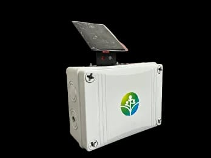
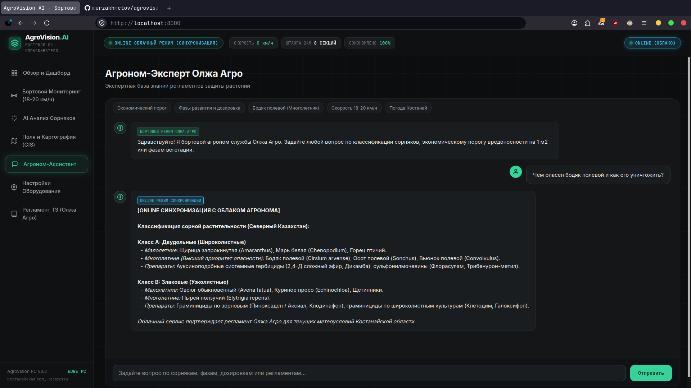
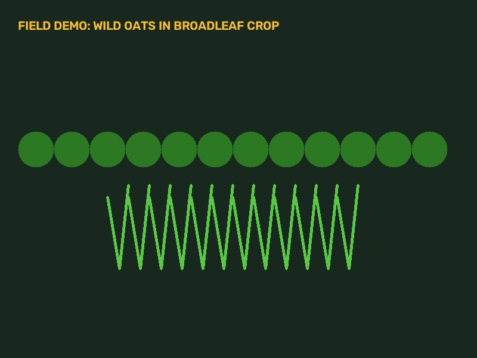
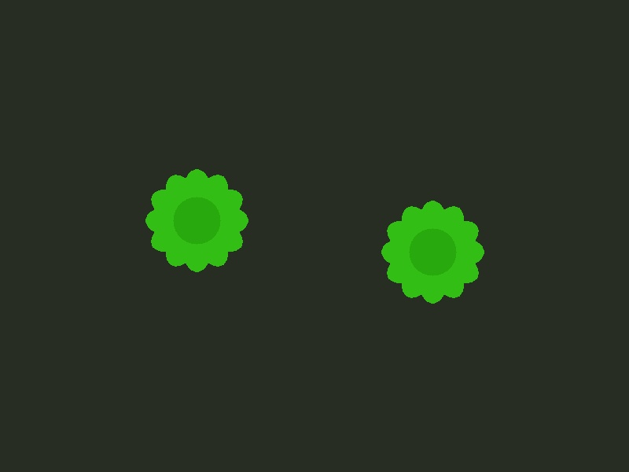
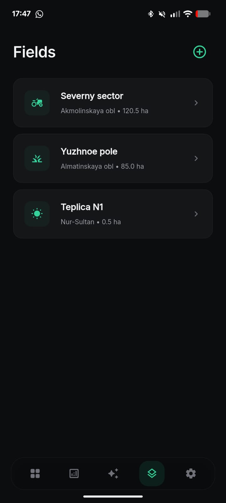

ТОЧНОЕ ОПРЫСКИВАНИЕ.
ЭКОНОМИЯ 60-80% СЗР.
Бортовой компьютер для самоходных опрыскивателей по регламенту Олжа Агро. Локальный инференс YOLO на скорости 18-20 км/ч, детекция Классов A и B, порог вредоносности на 1 м2 и независимое управление 8 секциями штанги 24 метра.

18-20 км/ч
Рабочая скорость в поле
11-13 мс
Время отклика YOLO (50-60 FPS)
60-80%
Экономия гербицидов
100% OFFLINE
Автономность без интернета
Логика принятия решений бортового компьютера
Строгое соответствие 4 блокам агрономического регламента Северного Казахстана.
Сверхбыстрый локальный CV-инференс
Модели YOLOv8s CropAndWeed и YOLO11n Broadleaf работают прямо на ПК в кабине опрыскивателя без интернета, обрабатывая видеопоток за 11-13 мс на скорости до 20 км/ч.
Классификация: Класс A vs Класс B
Разделение сорняков на двудольные (Класс A: щирица, марь, бодяк, осот, вьюнок) и злаковые (Класс B: овсюг, куриное просо, пырей) для раздельного подбора действующих веществ.
Экономический порог на 1 м2
До 5 малолетних шт/м2 - форсунки закрыты (100% экономия). 6-15 шт/м2 - регламентная норма. Более 15 шт/м2 - максимум (+25%). От 2 многолетников - критическая опасность и мгновенное включение.
Управление 8 секциями штанги (24м)
Независимые быстродействующие клапаны точечно включают распыл только над очагами сорняков, исключая сплошную обработку чистых участков и ожоги культуры.
Система AgroVision AI в реальной работе
Посмотрите работу системы точечного внесения на самоходном опрыскивателе.
Кабинный терминал 18-20 км/ч
Отображение текущей скорости, факелов распыла по 8 секциям штанги, счетчиков сорняков и процентов экономии в режиме реального времени.
Анализ фаз развития
Определение фазы: семядоли - 2 листа (базовая норма), 4-6 листьев (+15-20% дозировка для пробития кутикулы), цветение (предупреждение о неэффективности).
Точный расчет экономии
Мгновенная калькуляция сэкономленного СЗР в литрах и тенге по сравнению со сплошным недифференцированным внесением.
Аппаратный комплекс опрыскивателя
Надежные компоненты для непрерывной работы в условиях степей Костанайской области.

Бортовой блок и сенсорная штанга 24м
Промышленный вычислитель с защитой от пыли и вибраций, высокоскоростные камеры с активной подсветкой и двухфакельные инжекторные форсунки IDTA 120-03 для исключения сноса ветром.
- • 8 независимых секций штанги с быстрым ШИМ-управлением
- • Инжекторные распылители IDTA 120-03 (крупная капля)
- • Полная пылевлагозащита IP67 для полевых условий

Аэроразведка полей и мультиспектральные дроны
Автономные БПЛА для предварительного картирования засоренности, построения карт NDVI и выявления очагов многолетних корнеотпрысковых сорняков перед выездом опрыскивателя.
- • Аэрофотосъемка и картирование контуров полей
- • Выявление очагов бодяка и осота с воздуха
- • Экспорт полетных карт в бортовой компьютер
Полнофункциональный софт для агронома
Весь арсенал инструментов точного земледелия в едином веб-интерфейсе бортового ПК.
Бортовой монитор 18-20 км/ч
Живой видеопоток с камер штанги, визуализатор 8 секций распыла (S1-S8), прицел детекции, телеметрия скорости и порога вредоносности.
Инспекция фото и расчет дозировок по ТЗ
Загрузка снимков поля, мгновенный инференс YOLO, вывод аннотированного фото, классификация сорняков, определение фазы развития и расчет дозировки гербицида.

Выбор гербицидов для Северного Казахстана
Регламентированный подбор препаратов: 2,4-Д сложный эфир и дикамба для Класса A, граминициды (Аксиал / Пиноксаден) для Класса B, глифосат по стерне при пырее.

Агроном-Консультант (Офлайн + Gemini 3.1 Flash Lite)
Автономная база знаний для полей без связи, а при наличии сети - интеграция с нейросетью Google Gemini 3.1 Flash Lite с предустановленным API-ключом.

Регламент ТЗ ментора (Олжа Агро)
Интерактивный экран со всеми 4 блоками менторского регламента для демонстрации жюри, агрономической службе и механизаторам.

Карта полей GIS и конфигурация опрыскивателя
Векторные контуры полей, расчет обработанной площади, калибровка рабочей скорости и параметров штанги.

Галерея системы и библиотека сорняков
Скриншоты реального интерфейса и примеры детекции сорной растительности.

Овсюг обыкновенный (Avena fatua)
Злаковый сорняк яровых культур. Регламент СЗР: селективные граминициды (Аксиал, Пиноксаден).

Бодяк полевой (Cirsium arvense)
Глубокая корневая система. Порог: >= 2 шт/м2 критическая угроза, баковая смесь 2,4-Д + дикамба.

Спутниковые и векторные контуры
Учет обработанных гектаров, история внесений и цветовая индикация засоренности участков.
Запустите AgroVision AI на вашем компьютере
Запуск в 1 клик через AgroVision.exe для Windows или start_pc_system.sh для Linux/macOS. 100% бесплатно и автономно.